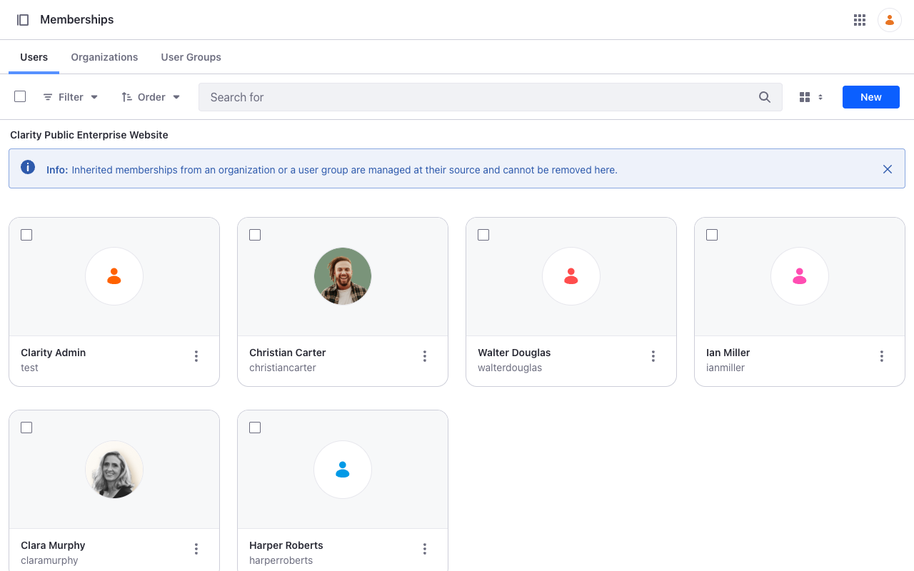

Workbook › Day 1
Level 2 — Sites
What you'll build: Clarity's public enterprise website, configured for launch, and an empty site for a future distributor portal. You also give the Marketing Coordinator role its permissions and point the instance at the public site.
Key terms
- Site: a set of pages with its own members and settings. Visitors who aren't signed in can see a public site's public pages.
- Site Menu: the panel on the left of a site, opened with the icon at the top left. It holds the site's People, Site Builder, Design and Configuration sections.
- Site member: a user who belongs to a site. Members get more than visitors through site roles.
- Instance: the whole Liferay installation. Some settings belong to a site (its address, languages, accessibility), others to the instance (such as where
http://localhost:8080/takes you). - Virtual host: a domain name, such as
www.clarityvisionsolutions.com, that opens a site directly. - Permission: an action (VIEW, ADD, UPDATE…) on a resource (an application, a kind of item), granted to a role.
2.1 — Create Clarity's two sites
🎯 Goal: Clarity Public Enterprise Website and Clarity Distributor Portal, both blank sites, with stable external reference codes so every later prompt can address them.
💬 Prompt:
Create Clarity's two sites as blank sites (no template, no initializer),
as described in section 3 of context-source/clarity-brief.md:
- "Clarity Public Enterprise Website", external reference code
clarity-public, friendly URL /clarity
- "Clarity Distributor Portal", external reference code
clarity-distributor-portal, friendly URL /distributor-portal
If a site with that external reference code already exists, leave it as it
is and tell me. Read both back and show me their id, external reference
code, name and friendly URL. Add both to solution-index.yaml under R2.
✅ Verify (look, don't change anything):
- Global Menu → Control Panel → Sites: both sites are listed.
- Open Clarity Public Enterprise Website: it has no pages yet.

🧪 Acceptance criteria (what the level's Playwright check tests, in ⭐ Extras):
- AC 2.1-1 · API, as the admin: the site
clarity-publicis named Clarity Public Enterprise Website, with the friendly URL/clarity. - AC 2.1-2 · API, as the admin: the site
clarity-distributor-portalis named Clarity Distributor Portal, with the friendly URL/distributor-portal.
2.2 — Add members and assign site roles
🎯 Goal: the people who build and contribute to the public site are its members, with the right site roles.
💬 Prompt:
Using the manage-sites and manage-roles-permissions skills, set the members
of the site clarity-public:
- Walter Douglas has the site role Site Administrator.
- Christian Carter and Harper Roberts have the site role Site Content
Contributor.
- Ian Miller and Clara Murphy are members with no extra site role.
Don't add any other member or role. Read the memberships and site roles
back from Liferay and show them as a table. Then tell me how I'd add a
whole user group as a site member, and whether you can do that through
the API on this release.
✅ Verify (look, don't change anything):
- In the public site, Site Menu → People → Memberships → Users tab: Walter Douglas, Christian Carter, Harper Roberts, Ian Miller and Clara Murphy are listed (and you, the site's creator).
- The Actions menu (⋮) next to Christian Carter → Assign Site Roles: Site Content Contributor is selected. Close it without saving.

🧪 Acceptance criteria (what the level's Playwright check tests, in ⭐ Extras):
- AC 2.2-1 · API, as the admin: the members of
clarity-publicare Walter Douglas, Christian Carter, Harper Roberts, Ian Miller, Clara Murphy and the admin, and no one else. - AC 2.2-2 · API, as the admin: in
clarity-public, Walter Douglas has the site role Site Administrator, and Christian Carter and Harper Roberts have Site Content Contributor.
📖 Why it matters: adding a user group as a site member makes every current and future member of the department a site member. Liferay's headless API can't do that on this release, so your agent told you the screen instead. You'll meet a few settings like this: part of working with an agent is knowing when the UI is the right tool.
2.3 — Configure the public site
🎯 Goal: the public site is ready for its audience: a description, open membership, English and Spanish only, Liferay's accessibility menu, and a virtual host.
💬 Prompt:
Configure the site clarity-public as described in section 3 of
context-source/clarity-brief.md:
1. Description: the text in the brief.
2. Membership type: Open.
3. Languages: a custom set with only English (United States), the default,
and Spanish (Spain).
4. Turn on the accessibility menu for this site only.
5. Virtual host for the public pages: www.clarityvisionsolutions.com.
Keep the friendly URL /clarity.
Prefer the headless APIs; for a setting they don't cover, use the site's
group-scoped OSGi configuration; if neither exists, don't use an
unsupported API: give me the exact screen and field to set it myself.
Put settings 1–4 in a re-runnable script, scripts/site_settings.py: you'll
re-apply them after later deploys.
Tell me which mechanism you used for each setting, read each one back, and
check the accessibility menu is NOT on for the Clarity Distributor Portal.
📋 After the prompt:
- Set the virtual host yourself on the screen the agent named (Site Menu → Configuration → Site Settings → Site Configuration → Site URL → Public Pages → Virtual Host), and save.
✅ Verify (look, don't change anything). All in the public site, under Site Menu → Configuration → Site Settings:
- Site Configuration → Details: the description, and Membership Type Open.
- Site Configuration → Site URL: friendly URL
/clarity, and the virtual hostwww.clarityvisionsolutions.com. - Localization: only English (United States) and Spanish (Spain) are In Use.
- Accessibility: the accessibility menu is enabled.
🧪 Acceptance criteria (what the level's Playwright check tests, in ⭐ Extras):
- AC 2.3-1 · API, as the admin:
clarity-publichas the membership type Open and the description from the brief. - AC 2.3-2 · API, as the admin:
clarity-public's languages are exactly English (United States), the default, and Spanish (Spain). - AC 2.3-3 · Browser, as the admin:
clarity-public's public pages have the virtual hostwww.clarityvisionsolutions.com. - AC 2.3-4 · Browser, as the admin: the accessibility menu is enabled in
clarity-public's site settings, and not inclarity-distributor-portal's.
⚠️ If it doesn't match: www.clarityvisionsolutions.com doesn't open in your browser: that's expected. The virtual host only answers once that name resolves to your computer (a hosts file entry). You don't need it during the course: keep using http://localhost:8080/web/clarity.
2.4 — Give the Marketing Coordinator role its permissions
🎯 Goal: the Marketing Coordinator role can manage collections and categories in the sites its holders work in, and nothing more. You'll see the effect by impersonating Christian Carter before and after.
📋 Before the prompt:
- As the Clarity Admin, go to Global Menu → Control Panel → Users and Organizations, click the Actions menu (⋮) next to Christian Carter, and choose Impersonate User.
- In the tab that opens, go to
http://localhost:8080/web/clarityand open the Site Menu: Christian has no Site Builder or Categorization section. Keep the tab open.
💬 Prompt:
Using the manage-roles-permissions skill, grant the regular role "Marketing
Coordinator", at company scope, the permissions a marketing coordinator
needs to curate what the site shows, and nothing beyond that:
- Collections: access the Collections application in site
administration, view it, add collections, and view and update
collections;
- Categories: access the Categories application in site administration,
view it, add vocabularies and categories, and view and update
categories.
Before granting anything, read the role's current permissions and list the
resource names and action keys you'll add, and why each is needed. Don't
grant PERMISSIONS, DELETE or any administrator action, and don't touch any
other role. Afterwards, read the role's permissions back and show me the
difference.
✅ Verify (look, don't change anything):
- Global Menu → Control Panel → Roles → Marketing Coordinator → Define Permissions → Summary: the permissions the agent listed, and nothing else.
- Refresh the tab where you're impersonating Christian Carter: the Site Menu now has Site Builder → Collections and Categorization → Categories, with a New button in each. Don't save anything. Close the tab when you're done (Be Yourself Again in the user menu).
🧪 Acceptance criteria (what the level's Playwright check tests, in ⭐ Extras):
- AC 2.4-1 · API, as the admin: the Marketing Coordinator role has the collection and category permissions from the prompt, and no PERMISSIONS or DELETE action.
- AC 2.4-2 · Browser, as Christian Carter: the public site's Collections and Categories applications open, each with a New button.
📖 Why it matters: a regular role's permissions apply at company scope: in every site its holder can work in. A site role's permissions apply only in the site where it's assigned, which is why Site Content Contributor exists. In Level 6, Liferay CMS Spaces add their own membership and roles on top: that's where Christian gets content-authoring rights.
2.5 — Point the instance at the public site
🎯 Goal: http://localhost:8080/ opens Clarity's public site, and users land there after signing in or out.
💬 Prompt:
I want the instance's Home URL, Default Landing Page and Default Logout
Page to be /web/clarity. Check whether this release has a supported API or
OSGi configuration for these fields. If it has, set them and read them
back. If it hasn't, don't use an unsupported API and don't restart
Liferay: give me the exact screen and fields to set them myself.
📋 After the prompt:
- If the agent gave you a screen, set the three fields there and save.
✅ Verify (look, don't change anything):
- Global Menu → Control Panel → Instance Settings → Platform → Instance Configuration → General: the three fields read
/web/clarity. - Open
http://localhost:8080/in a private window: it redirects to the Clarity site (still empty until Level 3).
🧪 Acceptance criteria (what the level's Playwright check tests, in ⭐ Extras):
- AC 2.5-1 · Browser, as Guest: opening
/ends on/web/clarity. - AC 2.5-2 · Browser, as Christian Carter: signing in through
/c/portal/loginends on/web/clarity.
🧠 Knowledge check
Question 1. In 2.4 you grant the regular role Marketing Coordinator permission to manage Collections, at company scope. Christian holds that role. In which sites can Christian now manage collections?
- A. Only in the public site, where Christian is a Site Content Contributor.
- B. In every site Christian can work in, because the role is regular.
- C. Only in sites where Christian also holds a site role.
- D. In none, until each site grants the permission in its own settings.
Question 2. The public site's membership type is Open. What does that allow?
- A. Visitors who aren't signed in can see the site's private pages.
- B. Every user group in the instance becomes a member of the site.
- C. Guest can add content, as long as a workflow reviews it.
- D. Any signed-in user can join the site without approval.
Question 3. 2.3 puts the site settings in a re-runnable script, scripts/site_settings.py. Why does the course need to run it again later?
- A. Each site deploy resets some of them, such as languages.
- B. Liferay forgets site settings each time the server restarts.
- C. The headless API can't store them, so a script holds them instead.
- D. Settings expire overnight and must be re-applied each morning.
⭐ Extras
Optional, for when you finish early. The next level doesn't depend on them.
⭐ 2.6 — Bonus: check Level 2 with Playwright
🎯 Goal: tests/e2e/level-2.spec.ts, with one test per acceptance criterion (🧪) of Level 2, added to the Playwright suite from 1.3. Write the prompt yourself: start from 1.3's and point it at this level's criteria.
📋 Before the prompt:
- If you skipped 1.3, do it first: it sets up the suite and its sign-in helpers.
✅ Success looks like:
- In
tests/e2e,npx playwright test level-2runs one test per acceptance criterion of Level 2, each named by its id, and all pass. - In the public site, set Site Settings → Site Configuration → Details → Membership Type to Restricted, and run the tests again: AC 2.3-1 fails. To undo it, set it back to Open, and run them again: all pass.
npx playwright teststill passes for every level you've added.